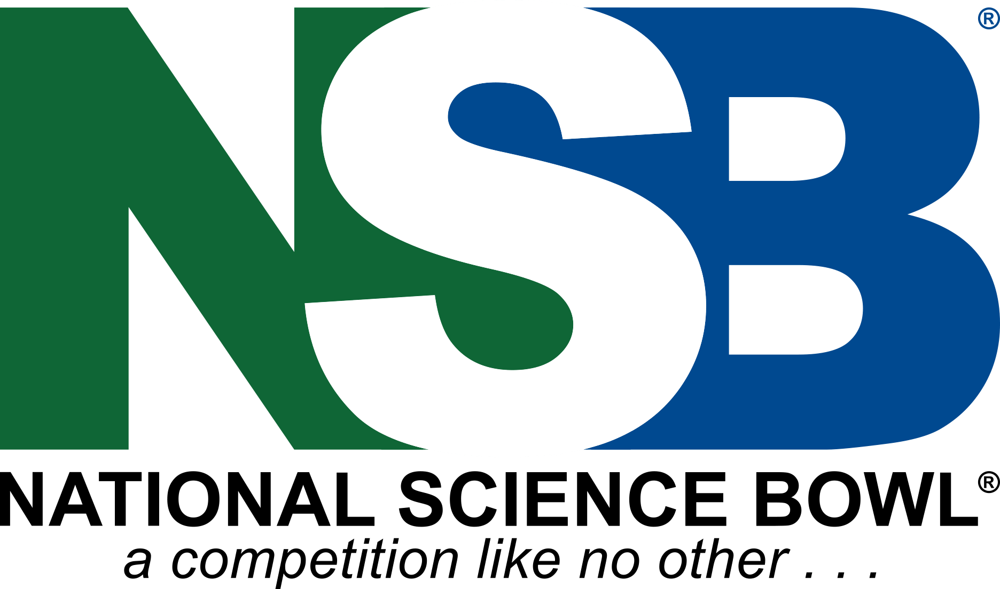
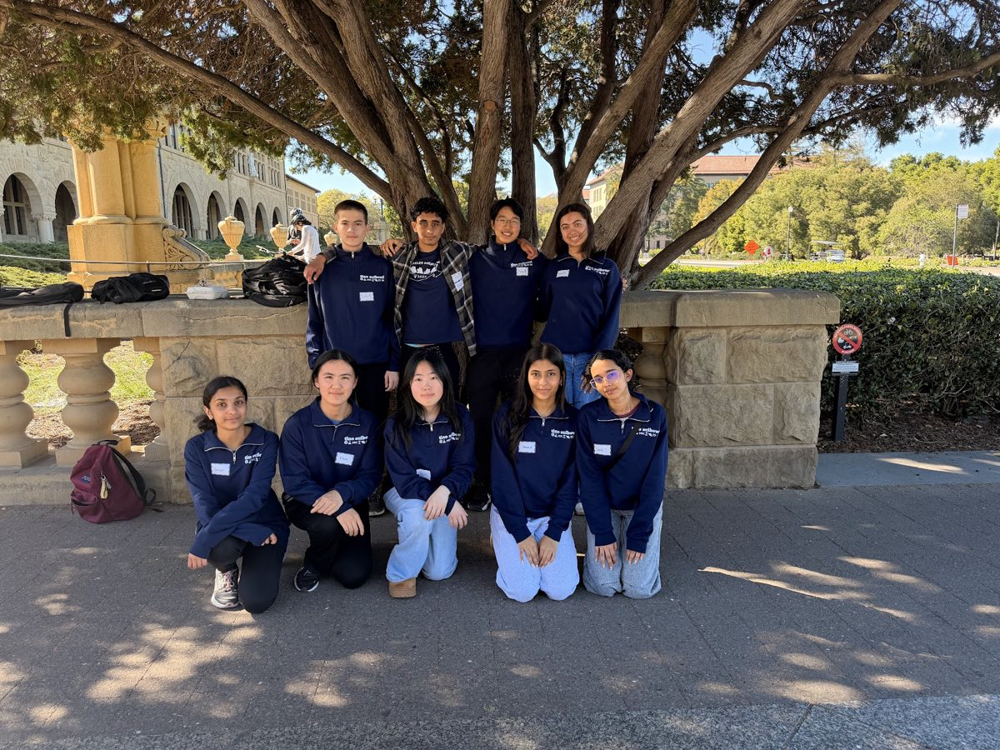

Tino Science Bowl
A buzzer competition with five members per team. It works like Jeopardy, with toss-up and bonus questions, all on science and math.

Why join
- Go deeper into one or more science subjects
- Compete against talented students from other schools
- Collaborate with your team and make new friends
- Make memories at practices and team bonding
- Tournaments with live scoreboards and rankings
How a match works
Two teams face each other at the buzzers, with four of the five members playing at a time. A toss-up question goes to whoever buzzes in first. If the answer is correct, the team gets a bonus question to solve together.
- Toss-ups are worth 4 points and bonus questions are worth 10
- A missed toss-up gives the other team a chance to answer
- A regional match has two halves of 8 minutes with a 2 minute break
The team plays more than six tournaments a year, in person and online.
Subjects
Questions cycle through five subjects. Each member usually specializes in one or two.
- Math
- Physics
- Chemistry
- Biology
- Earth & Space

Results
- Top 5 and Top 10 individual subject rankings for two members, Stanford Science Bowl (2026)
- Top 12 (double elimination), MIT Science Bowl (2023)
- 2nd place, Berkeley Science Bowl (2023)
Alumni
Tino SciBowl alumni have gone on to UChicago, Stanford, MIT, UPenn, UCLA and UC Berkeley. Many keep hosting Science Bowl tournaments at their colleges.